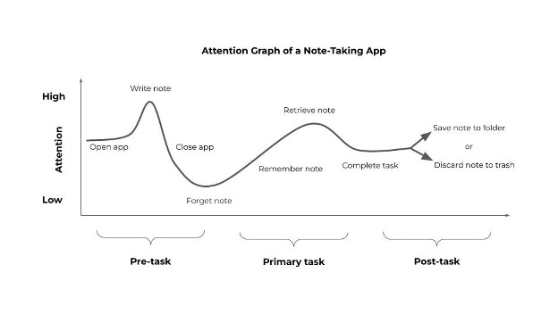

Workflows in Notion & Obsidian (UI Overview)
Attention Graph
It is important to understand how a technology product engages attention. In Calm Technology: Principles and Patterns for Non-Intrusive Design, Amber Case distinguishes three forms of attention: primary, secondary, and tertiary. Here, we add three stages (pre-task, primary task, and post-task) to the attention graph below in order to distinguish three crucial phases when the user engages with the technology product.
Special attention should be paid to the high points of this arc. During the high-attention phases of writing the note and retrieving the note, the user is engaging the most directly with the app. Primary task completion likely hinges on the user engaging longer in the pre-task phase and shorter in the primary task phase.
While the user is opening and closing the app, the app is likely occupying their secondary form of attention while they transition to a new primary task.
Additionally, saving notes increases the required amount of attention a user must dedicate to the app, so saving and organization workflows should also be closely monitored.
Finally, the duration in which the note is forgotten by the user does not clearly indicate usefulness of the entire app. A user may forget one note but continue drafting/organizing other notes.